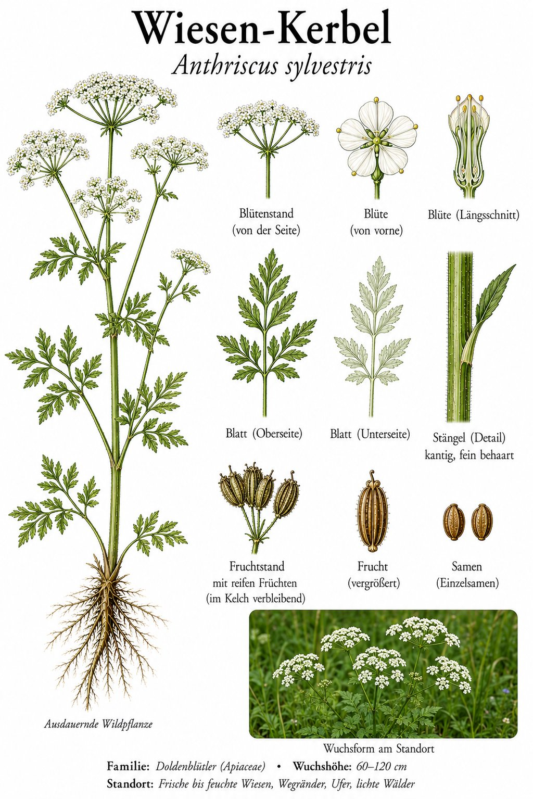
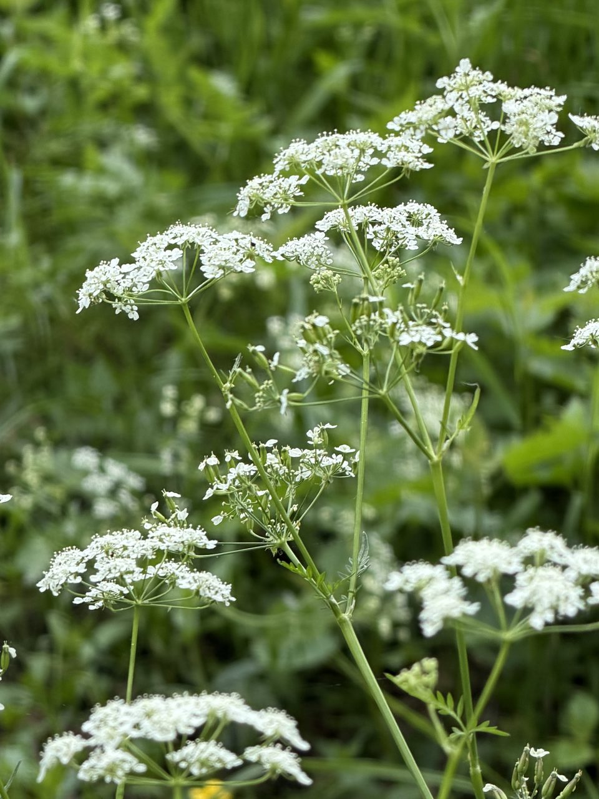

Der weiße Schaum, der im Mai die Straßenränder überzieht.


Mai-Schaum am Wegesrand
Wenn im Mai die Straßen- und Wiesenränder wie mit weißem Schaum überzogen wirken, ist meist der Wiesen-Kerbel am Werk. Seine vielen kleinen Blüten stehen in lockeren Doppeldolden und überragen das frische Gras. Für viele ist er der Inbegriff des beginnenden Frühsommers.
Schön — aber Vorsicht beim Verwechseln
Der Wiesen-Kerbel selbst ist harmlos, doch unter den weiß blühenden Doldenblütlern stecken hochgiftige Doppelgänger wie der Gefleckte Schierling. Wer hier sammeln möchte, muss absolut sicher bestimmen können. Faustregel für Laien: im Zweifel nur schauen, nicht pflücken.
Wissenswertes & Merksätze
Erkennungszeichen
Bis 1,5 m hoch; hohle, gerillte, unten weich behaarte Stängel ohne Flecken; fein gefiederte, „farnähnliche“ Blätter. Weiße Doppeldolden, auffällig früh im Jahr (April–Juni).
Kälberkropf und Suppengrün
Alte Namen wie „Kälberkropf“ zeigen, dass die jungen Triebe früher als Wildgemüse und Viehfutter dienten. In der Küche wird er manchmal mit dem echten Gartenkerbel verwechselt — riecht aber längst nicht so fein.